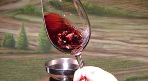
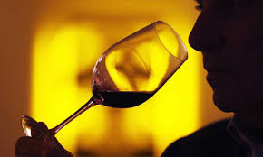
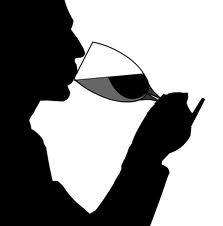

TASTING
SEEHold the glass by its stem and tip it away from you, preferably againsta white background. See the different shades of color, particularly at the rim. Red wines range from deep purple to pale tawny; whites go from pale greenish-yellow to deep gold. |
|
|  | SWIRLBy swirling, you maximize the wine surface area and release more of the bouquet. |
|  | SMELLNotice if the wine is clean and attractive, the intensity of the smell, and what the aromas bring to mind. Negative or "off" smells are: Vinegar: Too much acetic acid in wine. Sherry: Too much oxygen in wine. Cork: Wine has absorbed the taste of defective cork making it musty or moldy in flavor. Sulfur: Too much sulfur dioxide present. |
|  | SIPHold the wine in your mouth for three seconds before swallowing. Notice how sweet or sour, bitter, astringent, or alcoholic the wine is. Gauge the body of the wine. Think skim milk, milk, heavy cream. Also, how does the wine feel in your mouth? The term "mouthfeel" is used for the sensations experienced. |
SAVORNow is the time to assess the wine as a whole. Do I like this wine? Why or why not? Were all the elements in balance or did one of them seem obtrusive? In young reds, tannin often dominates while young whites are often very acidic. In an older wine, this lack of balance would be a fault. Is the wine light, medium, or full bodied? What kinds of food would work well with this wine? |